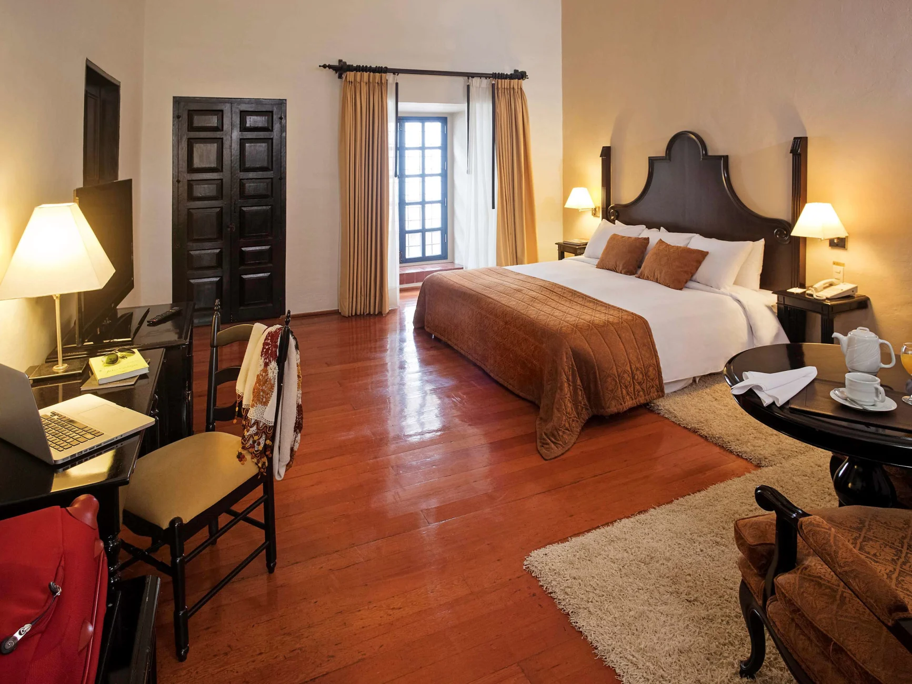

Vuelo: Buenos Aires - Lima

Hotel Estelar Miraflores
El Hotel Estelar Miraflores se encuentra en Lima, a 500 m del Parque Kennedy y a 900 m del Centro Comercial Larcomar. Los huéspedes podrán disfrutar del restaurante con vista panorámica a la ciudad y tendrán asistencia del personal de recepción durante las 24h.
Actividades:
Circuito gastronómico

Descripción general
Disfrute de los mejores platos típicos de Perú, elaborados por los mejores chefs de la ciudad.
Visita los mejores parques de la ciudad

Descripción general
Recorra los mejores parques de la ciudad, llenos de mucha naturaleza y encanto. Entre ellos, está la visita al Parque El Olivar, uno de los mejores de Sur America.